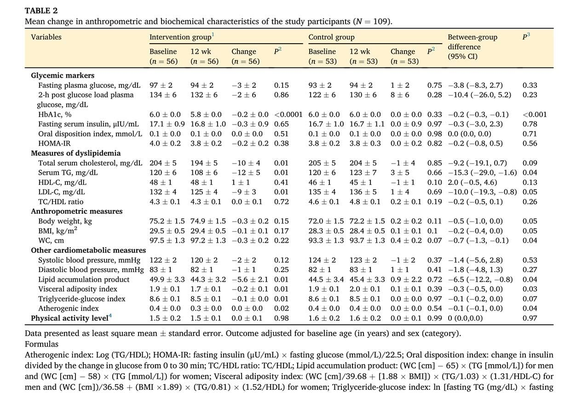
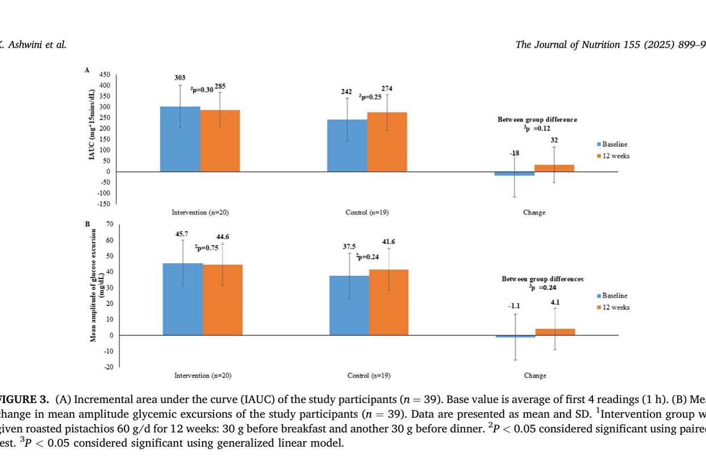

AI summary & key facts
Louis shares Luigi Fontana's summary of a 12-week RCT in 120 people with prediabetes testing 60 g of pistachios daily (30 g before breakfast and dinner). Pistachios lowered HbA1c, post-meal glucose spikes, LDL, triglycerides and waist circumference, while blood pressure, fasting glucose and insulin did not change.
- 120 randomized (60 pistachio, 60 control); 109 completed
- HbA1c -0.2%
- Post-meal glucose spikes 28% lower after breakfast and 17% after dinner (CGM)
- LDL -10 mg/dL (P = 0.05); triglycerides -12 mg/dL (P = 0.01); waist -0.7 cm
- Blood pressure, fasting glucose and insulin unchanged
Pistachios improve blood sugar control and cardiometabolic health in patients with prediabetes.
Can Pistachios Help Prevent Diabetes? A New Study Shows Small but Promising Results!
A 12-week randomized controlled trial (RCT) tested whether eating 60g of pistachios daily (30g before breakfast & dinner) could improve glycemic control and cardiometabolic health in individuals with prediabetes.
Paper · The Journal of Nutrition · 2025Effect of Premeal Pistachio Supplementation on Cardiometabolic Risk Factors among Asian Indian Adults with Prediabetes: A Randomized Controlled Trialdoi.org
🔹 120 participants randomized (60 in the pistachio group, 60 in the control group)
🔹 109 participants completed the study (90.8% follow-up rate)
Key Findings:
✅ Lower HbA1c (-0.2%) – a crucial marker of long-term blood sugar control
✅ Improved post-meal glucose response – CGM data showed 28% lower spikes after breakfast & 17% after dinner
✅ Better lipid profile – significantly lower serum LDLc (-10mg/dL; P = 0.05) and triglycerides (-12 ± 5 mg/dL; P = 0.01)
✅ small reduction in waist circumference (-0.7 cm; 95% CI: −1.3, −0.1 cm; P = 0.04)
✅ Urinary creatinine-adjusted MHP, an objective marker for pistachio consumption, significantly increased by 62% in the intervention compared with the control group
Interestingly, blood pressure, fasting glucose, 2-hour post-glucose, and insulin levels remained unchanged, indicating pistachios primarily impact long-term glucose regulation and postprandial metabolism.
This is one of the first studies to explore the effects of pistachios in people with prediabetes. The findings suggest that adding pistachios as a premeal snack could have an additive effect to CR and endurance exercise to improve metabolic health and diabetes prevention.
With prediabetes and diabetes rates on the rise, small dietary changes can make a small but significant difference. Would you consider incorporating pistachios into your daily routine?
#DiabetesPrevention #Prediabetes #NutritionScience #Pistachios #MetabolicHealth #CGM


